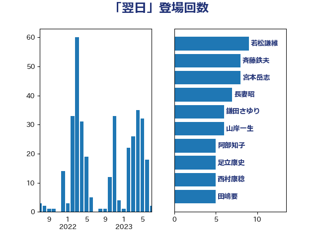

単語「翌日」

| 長妻昭 | 立憲民主党 | 16 回 |
| 高橋千鶴子 | 日本共産党 | 10 回 |
| 若松謙維 | 公明党 | 9 回 |
| 足立康史 | 日本維新の会 | 7 回 |
| 茂木敏充 | 自由民主党 | 6 回 |
| 加藤勝信 | 自由民主党 | 5 回 |
| 後藤茂之 | 自由民主党 | 5 回 |
| 斉藤鉄夫 | 公明党 | 5 回 |
| 森まさこ | 自由民主党 | 5 回 |
| 田村智子 | 日本共産党 | 5 回 |
| 菅義偉 | 自由民主党 | 5 回 |
| 西村智奈美 | 立憲民主党 | 5 回 |
| 塩田博昭 | 公明党 | 4 回 |
| 宮本岳志 | 日本共産党 | 4 回 |
| 宮本徹 | 日本共産党 | 4 回 |
| 岸田文雄 | 自由民主党 | 4 回 |
| 川田龍平 | 立憲民主党 | 4 回 |
| 梅村みずほ | 日本維新の会 | 4 回 |
| 伊藤岳 | 日本共産党 | 3 回 |
| 大西健介 | 立憲民主党 | 3 回 |
| 小西洋之 | 立憲民主党 | 3 回 |
| 杉尾秀哉 | 立憲民主党 | 3 回 |
| 江田憲司 | 立憲民主党 | 3 回 |
| 河野太郎 | 自由民主党 | 3 回 |
| 笠井亮 | 日本共産党 | 3 回 |
| 萩生田光一 | 自由民主党 | 3 回 |
| 青木愛 | 立憲民主党 | 3 回 |
| 高木毅 | 自由民主党 | 3 回 |
| 中島克仁 | 立憲民主党 | 2 回 |
| 井林辰憲 | 自由民主党 | 2 回 |
| 吉川沙織 | 立憲民主党 | 2 回 |
| 國重徹 | 公明党 | 2 回 |
| 小泉進次郎 | 自由民主党 | 2 回 |
| 山井和則 | 立憲民主党 | 2 回 |
| 山岸一生 | 立憲民主党 | 2 回 |
| 山添拓 | 日本共産党 | 2 回 |
| 岩谷良平 | 日本維新の会 | 2 回 |
| 岸真紀子 | 立憲民主党 | 2 回 |
| 川合孝典 | 国民民主党 | 2 回 |
| 平木大作 | 公明党 | 2 回 |
| 打越さく良 | 立憲民主党 | 2 回 |
| 木原誠二 | 自由民主党 | 2 回 |
| 本村伸子 | 日本共産党 | 2 回 |
| 杉田水脈 | 自由民主党 | 2 回 |
| 東徹 | 日本維新の会 | 2 回 |
| 梅村聡 | 日本維新の会 | 2 回 |
| 梶山弘志 | 自由民主党 | 2 回 |
| 森山浩行 | 立憲民主党 | 2 回 |
| 武田良太 | 自由民主党 | 2 回 |
| 熊野正士 | 公明党 | 2 回 |
| 田村まみ | 国民民主党 | 2 回 |
| 石井正弘 | 自由民主党 | 2 回 |
| 秋野公造 | 公明党 | 2 回 |
| 穀田恵二 | 日本共産党 | 2 回 |
| 緑川貴士 | 立憲民主党 | 2 回 |
| 芳賀道也 | 国民民主党 | 2 回 |
| 藤巻健太 | 日本維新の会 | 2 回 |
| 西村康稔 | 自由民主党 | 2 回 |
| 足立敏之 | 自由民主党 | 2 回 |
| 野田国義 | 立憲民主党 | 2 回 |
| 鈴木憲和 | 自由民主党 | 2 回 |
| 長峯誠 | 自由民主党 | 2 回 |
| 長浜博行 | 無所属 | 2 回 |
| 高良鉄美 | 無所属 | 2 回 |
| 上川陽子 | 自由民主党 | 1 回 |
| 上野通子 | 自由民主党 | 1 回 |
| 中西祐介 | 自由民主党 | 1 回 |
| 中谷元 | 自由民主党 | 1 回 |
| 丸川珠代 | 自由民主党 | 1 回 |
| 井上哲士 | 日本共産党 | 1 回 |
| 井出庸生 | 自由民主党 | 1 回 |
| 伊佐進一 | 公明党 | 1 回 |
| 伊藤孝江 | 公明党 | 1 回 |
| 伴野豊 | 立憲民主党 | 1 回 |
| 佐藤英道 | 公明党 | 1 回 |
| 佐藤茂樹 | 公明党 | 1 回 |
| 倉林明子 | 日本共産党 | 1 回 |
| 北村経夫 | 自由民主党 | 1 回 |
| 吉川元 | 立憲民主党 | 1 回 |
| 吉田とも代 | 日本維新の会 | 1 回 |
| 吉田久美子 | 公明党 | 1 回 |
| 吉田統彦 | 立憲民主党 | 1 回 |
| 和田義明 | 自由民主党 | 1 回 |
| 塩川鉄也 | 日本共産党 | 1 回 |
| 塩村あやか | 立憲民主党 | 1 回 |
| 大口善徳 | 公明党 | 1 回 |
| 安江伸夫 | 公明党 | 1 回 |
| 寺田静 | 無所属 | 1 回 |
| 小池晃 | 日本共産党 | 1 回 |
| 小沼巧 | 立憲民主党 | 1 回 |
| 小田原潔 | 自由民主党 | 1 回 |
| 山下雄平 | 自由民主党 | 1 回 |
| 山口壯 | 自由民主党 | 1 回 |
| 山田勝彦 | 立憲民主党 | 1 回 |
| 山田宏 | 自由民主党 | 1 回 |
| 山際大志郎 | 自由民主党 | 1 回 |
| 岡本三成 | 公明党 | 1 回 |
| 島村大 | 自由民主党 | 1 回 |
| 後藤祐一 | 立憲民主党 | 1 回 |
| 斎藤アレックス | 国民民主党 | 1 回 |
| 本田顕子 | 自由民主党 | 1 回 |
| 杉久武 | 公明党 | 1 回 |
| 松川るい | 自由民主党 | 1 回 |
| 林芳正 | 自由民主党 | 1 回 |
| 柚木道義 | 立憲民主党 | 1 回 |
| 梅谷守 | 立憲民主党 | 1 回 |
| 横沢高徳 | 立憲民主党 | 1 回 |
| 水岡俊一 | 立憲民主党 | 1 回 |
| 江島潔 | 自由民主党 | 1 回 |
| 浅川義治 | 日本維新の会 | 1 回 |
| 浜田聡 | NHK党 | 1 回 |
| 清水貴之 | 日本維新の会 | 1 回 |
| 渡辺周 | 立憲民主党 | 1 回 |
| 滝波宏文 | 自由民主党 | 1 回 |
| 牧山ひろえ | 立憲民主党 | 1 回 |
| 牧野たかお | 自由民主党 | 1 回 |
| 猪口邦子 | 自由民主党 | 1 回 |
| 田村貴昭 | 日本共産党 | 1 回 |
| 石井啓一 | 公明党 | 1 回 |
| 石井章 | 日本維新の会 | 1 回 |
| 石垣のりこ | 立憲民主党 | 1 回 |
| 石川大我 | 立憲民主党 | 1 回 |
| 石川香織 | 立憲民主党 | 1 回 |
| 福山哲郎 | 立憲民主党 | 1 回 |
| 稲富修二 | 立憲民主党 | 1 回 |
| 竹内真二 | 公明党 | 1 回 |
| 竹内譲 | 公明党 | 1 回 |
| 篠原豪 | 立憲民主党 | 1 回 |
| 紙智子 | 日本共産党 | 1 回 |
| 荒井優 | 立憲民主党 | 1 回 |
| 菅家一郎 | 自由民主党 | 1 回 |
| 蓮舫 | 立憲民主党 | 1 回 |
| 藤丸敏 | 自由民主党 | 1 回 |
| 藤田文武 | 日本維新の会 | 1 回 |
| 西銘恒三郎 | 自由民主党 | 1 回 |
| 赤嶺政賢 | 日本共産党 | 1 回 |
| 赤澤亮正 | 自由民主党 | 1 回 |
| 赤羽一嘉 | 公明党 | 1 回 |
| 遠藤敬 | 日本維新の会 | 1 回 |
| 重徳和彦 | 立憲民主党 | 1 回 |
| 野上浩太郎 | 自由民主党 | 1 回 |
| 金子恭之 | 自由民主党 | 1 回 |
| 鈴木俊一 | 自由民主党 | 1 回 |
| 鎌田さゆり | 立憲民主党 | 1 回 |
| 関芳弘 | 自由民主党 | 1 回 |
| 阿部知子 | 立憲民主党 | 1 回 |
| 階猛 | 立憲民主党 | 1 回 |
| 青山大人 | 立憲民主党 | 1 回 |
| 音喜多駿 | 日本維新の会 | 1 回 |
| 馬場伸幸 | 日本維新の会 | 1 回 |
| 高木啓 | 自由民主党 | 1 回 |
| 鷲尾英一郎 | 自由民主党 | 1 回 |